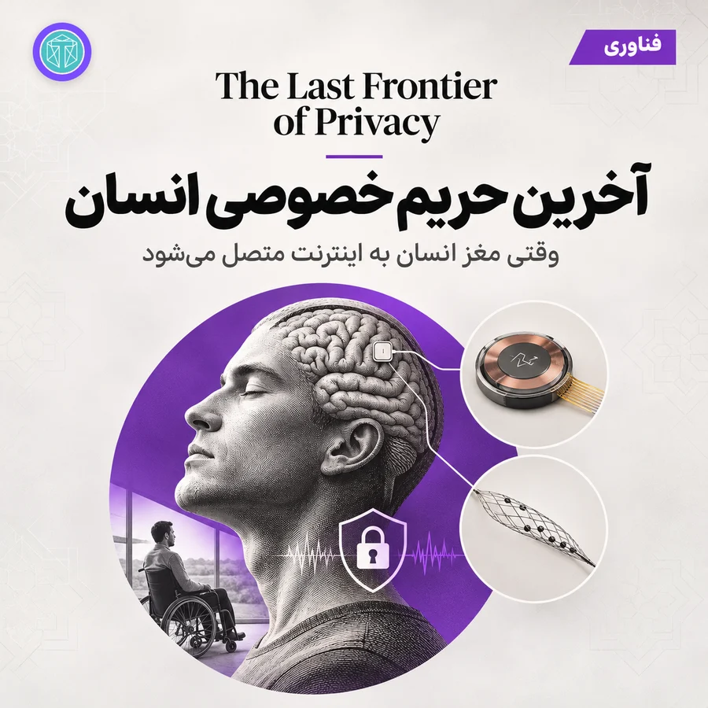

آخرین حریم خصوصی انسان؛ وقتی مغز به اینترنت وصل میشود
The last frontier of privacy: when the brain connects to the internet
تراشههای مغزی چطور کار میکنند، چه کسانی را درمان میکنند، چه شرکتها و چه پولی پشتشان است، کدام کسبوکارها را تغییر میدهند و دادهی مغز ما مال کیست
How brain chips work, whom they help, which companies and how much money are behind them, which businesses they change, and who owns the data in our brains
فناوریای که میتواند به آدم فلج دوباره صدا و استقلال بدهد، همزمان یکی از مهمترین پرسشهای عصر دیجیتال را پیش کشیده است: اطلاعات مغز ما مال چه کسی است؟ این گزارش از علم شروع میکند، به شرکتها و پولی که پشتشان است میرسد، بازار و کسبوکارهایی را که تغییر میکنند نشان میدهد و در آخر به سراغ حریم خصوصی ذهن میرود.
تصور کنید کسی که سالها نتوانسته دستش را تکان بدهد، فقط با اراده کردن ماوس را حرکت بدهد، برای خانوادهاش پیام بنویسد یا با صدای بازسازیشدهی خودش حرف بزند. این دیگر تخیل نیست؛ در آزمایشگاهها و بیمارستانهای آمریکا، اروپا و چین اتفاق افتاده است.
حالا تصور کنید روزی مدیر یک شرکت بتواند میزان تمرکز کارکنانش را از روی سیگنال مغزشان بسنجد. فاصلهی این دو تصویر، یکی از بزرگترین چالشهای علمی، اقتصادی و اخلاقی دهههای آینده است.
مجلهی Fortune در گزارشی در ۲۱ نوامبر ۲۰۲۶ به همین مسابقه پرداخته است. نیتا فراهانی، استاد دانشگاه دوک و از چهرههای اصلی اخلاق فناوری عصبی، در آن گزارش میگوید: «آنچه فکر و احساس میکنید، آخرین فضای واقعاً خصوصی شماست» (Fortune).
در یک نگاه
- حدود ۲۶ نفر با تراشهی Neuralink و ۱۵ نفر با دستگاه Synchron زندگی میکنند؛ و Neuralink روز ۲۵ نوامبر ۲۰۲۶ از تأیید نخستین آزمایش «محوری» (pivotal) خود در آمریکا خبر داد
- چین در مارس ۲۰۲۶ نخستین رابط مغزی کاشتنی را برای فروش تجاری تأیید کرد و اروپا در ژوئیهی ۲۰۲۶ تراشهی شبکیهی PRIMA را
- رابطهای گفتاری در پژوهشهای دانشگاهی به دقت حدود ۹۷٪ رسیدهاند
- بازار امروز کوچک است، چند صد میلیون دلار؛ ولی مورگان استنلی بازار بالقوه را فقط در آمریکا ۴۰۰ میلیارد دلار برآورد میکند
- یونسکو در نوامبر ۲۰۲۵ نخستین چارچوب جهانی اخلاق فناوری عصبی را تصویب کرد؛ ولی قانونها هنوز از فناوری عقباند
خبر تازه: آزمایش محوری Neuralink برای بیماران ALS
شرکت Neuralink روز ۲۵ نوامبر ۲۰۲۶ اعلام کرد که FDA نخستین آزمایش «محوری» (pivotal) یک تراشهی مغزی کاشتنی را در آمریکا تأیید کرده است. نام این آزمایش LINK است.
- چه کسانی: بزرگسالان آمریکایی با فلج شدید، بهویژه بیماران ALS؛ شرطهای ورود شامل دستکم ۱۸ سال سن و داشتن یک مراقب ثابت است
- چه چیزی سنجیده میشود: اینکه بیمار بتواند با فکر دستگاههای دیجیتال را کنترل کند، و ایمنی و پایداری تراشه در طول زمان
- چقدر طول میکشد: حضور هر بیمار حدود ۲۴ ماه است
- چرا مهم است: آزمایش محوری آخرین مرحله پیش از درخواست مجوز فروش است. در این مرحله طراحی دستگاه نهایی و تولید آن تثبیت میشود و پس از مجوز، بیمهها میتوانند هزینه را پوشش بدهند
Neuralink میگوید این آزمایش بر پایهی کار با بیش از ۳۰ شرکتکننده در آمریکا، کانادا و بریتانیا ساخته شده است. مطالعههای ثبتشدهی این شرکت در مجموع ۵۴ کاشت را در چهار کشور برنامهریزی کردهاند.
ALS بیماری پیشروندهای است که کنترل عضلات را میگیرد و حرکت و حرف زدن را بهتدریج ناممکن میکند. برای همین، بیماران ALS از نخستین کسانی هستند که این فناوری میتواند زندگیشان را تغییر بدهد.
نکته: این تأیید را خود Neuralink اعلام کرده و تا زمان انتشار خبرها، FDA آن را جداگانه تأیید نکرده بود. تعداد شرکتکنندگان و مراکز این آزمایش هم هنوز اعلام نشده است. دستگاه همچنان پژوهشی است و فروخته نمیشود (Glitchwire، Startup Fortune).
۱. تراشهی مغزی چطور کار میکند؟
مغز برای هر حرکت و هر کلمه سیگنال الکتریکی تولید میکند. رابط مغز و کامپیوتر (Brain-Computer Interface یا BCI) با الکترودهای بسیار کوچک بخشی از این سیگنالها را میگیرد و هوش مصنوعی آنها را به فرمان دیجیتال تبدیل میکند.
- دریافت سیگنال مغز
- رمزگشایی با هوش مصنوعی
- اجرای فرمان: حرکت ماوس، تایپ، صدا، حرکت بازوی رباتیک
کسی که به خاطر آسیب نخاع نمیتواند دستش را حرکت بدهد، هنوز در مغز سیگنال «قصد حرکت» را تولید میکند. کامپیوتر این الگو را میشناسد و نشانگر را جابهجا میکند.
نکتهی مهم: فناوری امروز ذهنخوانی نیست. این دستگاهها الگوهای مشخصی از فعالیت چند ناحیهی مغز را تفسیر میکنند، باید برای هر فرد آموزش ببینند و ممکن است اشتباه کنند.
چهار راه اصلی برای «گوش دادن» به مغز وجود دارد:
| روش | چطور | نمونه | دقت و خطر |
|---|---|---|---|
| غیرتهاجمی | هدست یا هدفون با حسگر روی پوست سر (EEG) | هدستهای تمرکز و خواب | ارزان و بیجراحی، ولی سیگنال ضعیف و کمدقت |
| از راه رگ | دستگاه شبکهای که با کاتتر از رگ به کنار مغز میرسد | Synchron | بدون باز کردن جمجمه، دقت متوسط |
| روی سطح مغز | لایهی نازک الکترود روی قشر مغز | Precision Neuroscience، Neuracle چین | دقت بالا، جراحی کمتر تهاجمی |
| درون بافت مغز | سوزنها یا رشتههای ریز در قشر مغز | Neuralink، Paradromics، آرایهی یوتا | بالاترین دقت، بیشترین خطر جراحی |
۲. از ۱۹۲۴ تا امروز
| سال | رویداد |
|---|---|
| ۱۹۲۴ | هانس برگر نخستین نوار مغزی (EEG) انسان را ثبت کرد |
| ۱۹۷۳ | ژاک ویدال در دانشگاه UCLA اصطلاح «رابط مغز و کامپیوتر» را مطرح کرد |
| ۲۰۰۴ | در برنامهی BrainGate، مردی فلج با کاشت آرایهی یوتا نشانگر کامپیوتر را با فکر حرکت داد |
| ۲۰۱۲ | زنی فلج با بازوی رباتیک و فقط با فکر، برای نخستین بار پس از ۱۵ سال خودش قهوه نوشید (مجلهی Nature) |
| ۲۰۱۶ | تأسیس Neuralink |
| ۲۰۲۱ | شیلی نخستین کشوری شد که «حقوق عصبی» را در قانون اساسی آورد |
| ۲۰۲۳ | دو مقاله در Nature: سرعت گفتار بازسازیشده به ۶۲ و ۷۸ کلمه در دقیقه رسید |
| ژانویهی ۲۰۲۴ | نخستین کاشت Neuralink در انسان (نولند آربا) |
| اوت ۲۰۲۴ | دانشگاه UC Davis: بیمار ALS با دقت ۹۷٫۵٪ «حرف زد» (NEJM) |
| آوریل ۲۰۲۵ | مجوز FDA برای الکترود سطحی Precision، برای کاشت تا ۳۰ روز |
| نوامبر ۲۰۲۵ | تصویب توصیهنامهی یونسکو؛ ۲۰۰ میلیون دلار سرمایه برای Synchron؛ مجوز آزمایش انسانی Paradromics |
| مارس ۲۰۲۶ | چین نخستین رابط مغزی کاشتنی را برای فروش تجاری تأیید کرد |
| ژوئیهی ۲۰۲۶ | تراشهی شبکیهی PRIMA مجوز فروش در اروپا گرفت |
| نوامبر ۲۰۲۶ | Neuralink از تأیید آزمایش محوری LINK در آمریکا خبر داد |
۳. دستاوردهای علمی: صدا، حرکت و بینایی
صدا برای کسانی که حرفشان در ذهن مانده
در اوت ۲۰۲۳، دو تیم از دانشگاه استنفورد و دانشگاه کالیفرنیا سانفرانسیسکو (UCSF) همزمان در Nature نشان دادند که میشود گفتار را از سیگنال مغز بازسازی کرد. تیم استنفورد به ۶۲ کلمه در دقیقه رسید و تیم UCSF به ۷۸ کلمه، همراه با یک چهرهی دیجیتال که حرف میزد (Nature، استنفورد، Nature، UCSF). گفتوگوی عادی حدود ۱۶۰ کلمه در دقیقه است.
یک سال بعد، تیم UC Davis در مجلهی پزشکی نیوانگلند (NEJM) گزارش داد که کیسی هارل، مردی ۴۵ ساله مبتلا به ALS، در همان جلسهی اول با دقت ۹۹٫۶٪ و با واژگان ۵۰ کلمهای حرف زد. در ادامه با واژگان ۱۲۵ هزار کلمهای، دقت به ۹۷٫۵٪ رسید و او بیش از ۲۴۸ ساعت از این سیستم استفاده کرد (Brown University).
حرکت دوباره
نولند آربا، نخستین بیمار Neuralink، که از شانه به پایین فلج است، با فکر کامپیوتر را کنترل میکند و شطرنج بازی میکند. در چین، دستگاه NEO شرکت Neuracle به افراد فلج با آسیب نخاع گردنی کمک میکند با یک دستکش بادی چیزی را بگیرند یا لیوانی را بردارند؛ کاشت آن از روی پردهی سخت مغز است و به بافت مغز آسیب نمیزند (People's Daily).
بازگشت بینایی
تراشهی PRIMA از شرکت Science Corp. یک تراشهی ۲ در ۲ میلیمتری با ۳۷۸ پیکسل است که زیر شبکیهی آسیبدیده کاشته میشود. در آزمایشی که در NEJM منتشر شد، ۳۸ بیمار در ۱۷ مرکز در پنج کشور آن را دریافت کردند و حدود ۸۰٪ کسانی که ارزیابی ۱۲ ماهه را تمام کردند، دستکم ۱۰ حرف بیشتر روی جدول بینایی خواندند. این دستگاه برای نوعی پیشرفته از تحلیل ماکولای خشک است که بیش از پنج میلیون نفر در جهان به آن مبتلا هستند (New Atlas).
۴. مسابقهی شرکتها؛ چه کسی کجاست؟
| شرکت | روش | وضعیت | پول و ارزش |
|---|---|---|---|
| Neuralink (آمریکا) | ۶۴ رشتهی نازکتر از مو درون قشر مغز، کاشت با ربات | حدود ۲۶ کاربر؛ اعلام تأیید آزمایش محوری LINK در نوامبر ۲۰۲۶ | حدود ۱٫۳ میلیارد دلار سرمایه؛ ارزش حدود ۹٫۷ میلیارد دلار |
| Synchron (آمریکا) | دستگاه شبکهای از راه رگ، بدون باز کردن جمجمه | ۱۵ کاربر؛ آمادهسازی آزمایش محوری | ۲۰۰ میلیون دلار در نوامبر ۲۰۲۵؛ ارزش نزدیک ۱ میلیارد دلار |
| Paradromics (آمریکا) | آرایهی پرچگال با بیشترین حجم داده، تمرکز بر گفتار | مجوز FDA نوامبر ۲۰۲۵؛ نخستین کاشت دائمی، ژوئن ۲۰۲۶ | شرکت خصوصی |
| Precision Neuroscience (آمریکا) | لایهی بسیار نازک الکترود روی سطح مغز | مجوز FDA برای کاشت تا ۳۰ روز؛ آزمایش روی ۳۷ بیمار | شرکت خصوصی |
| Science Corp. (آمریکا) | تراشهی شبکیه برای بازگرداندن بینایی | مجوز فروش در اروپا، ژوئیهی ۲۰۲۶ | شرکت خصوصی |
| Neuracle (چین) | الکترود روی پردهی سخت مغز، کنترل دستکش | نخستین مجوز فروش تجاری در جهان، مارس ۲۰۲۶ | پشتیبانی برنامهی ملی چین |
| Merge Labs (آمریکا) | رویکرد غیرتهاجمی با مولکول و فراصوت | مرحلهی پژوهش، بدون محصول | ۲۵۲ میلیون دلار؛ ارزش حدود ۸۵۰ میلیون دلار؛ OpenAI بزرگترین سرمایهگذار |
منابع: Fortune، Glitchwire، MedTech Dive، Paradromics، Precision Neuroscience و TechCrunch.
نکته: تأیید آزمایش محوری را خود Neuralink اعلام کرده است و تا زمان انتشار خبرها، FDA آن را جداگانه تأیید نکرده بود. هنوز هیچ تراشهی مغزی در بازار آمریکا فروخته نمیشود.
۵. زندگی چه کسانی عوض میشود؟
نخستین بازار این فناوری، پزشکی است؛ کسانی که بیشترین نیاز را دارند:
- افراد با آسیب نخاع: سازمان جهانی بهداشت تعداد آنها را در سال ۲۰۲۱ حدود ۱۵٫۴ میلیون نفر در جهان برآورد کرده است (WHO)
- بیماران ALS و بیماریهای نورون حرکتی، که بهتدریج توان حرکت و حرف زدن را از دست میدهند
- بازماندگان سکتهی مغزی و بیماران اماس؛ مورگان استنلی این گروهها را جزو نخستین بازارها میداند
- بیش از پنج میلیون نفر مبتلا به نوع پیشرفتهی تحلیل ماکولا که بینایی مرکزیشان را از دست دادهاند
- در آینده: درمان دقیقتر صرع، پارکینسون و افسردگی مقاوم با تحریک عصبی
ارزش واقعی این فناوری برای یک بیمار فقط سرعت تایپ نیست؛ این است که بتواند بدون وابستگی دائمی به دیگران پیام بدهد، کار کند و تصمیم بگیرد.
۶. بازار چقدر است؟
برآوردها بسیار با هم فرق دارند، چون هر کدام چیز متفاوتی را میشمارند:
| برآورد | رقم | چه چیزی را میشمارد |
|---|---|---|
| MarketsandMarkets | ۲۶۲ میلیون دلار در ۲۰۲۴ به ۵۰۶ میلیون دلار در ۲۰۲۹ (رشد سالانه ۱۴٫۱٪) | فروش فعلی دستگاههای BCI، بیشتر غیرتهاجمی و پژوهشی |
| CSIS | بیش از ۳۸ میلیارد دلار تا ۲۰۳۲ | کل بازار فناوری عصبی، از جمله تحریک عصبی |
| Morgan Stanley | ۴۰۰ میلیارد دلار بازار بالقوه فقط در آمریکا | همهی بیمارانی که در نظریه میتوانند استفاده کنند |
منابع: MarketsandMarkets، CSIS و MassDevice.
خود مورگان استنلی هم واقعبین است: در ۲۰ سال اول پس از عرضه «نفوذ محدود» پیشبینی میکند، درآمد تجمعی کمتر از ۱٫۵ میلیارد دلار تا ۲۰۳۵ و حدود ۱ میلیارد دلار درآمد سالانه تا ۲۰۴۱. یعنی سرمایه امروز روی آینده شرط میبندد، نه روی فروش امروز.
هزینه هم بالاست: برآوردهای تحلیلگران برای هر عمل Neuralink، با جراحی و پشتیبانی، حدود ۴۰ هزار دلار است (Sacra). این عدد برآورد است، نه قیمت رسمی. بیمهها معمولاً فقط پس از مجوز نهایی FDA هزینه را پوشش میدهند.
۷. کدام کسبوکارها به هم میریزند و کدام زاده میشوند؟
| حوزه | فرصت یا تغییر |
|---|---|
| پزشکی و توانبخشی | تجهیزات کاشت، جراحی رباتیک، مراکز توانبخشی تخصصی |
| هوش مصنوعی | مدلهای رمزگشایی سیگنال عصبی، شبیه همان مدلهای زبانی که گفتار را بازسازی میکنند |
| تراشه و الکترونیک | تراشههای کممصرف، باتری، انتقال بیسیم داده از درون بدن |
| نرمافزار | سیستمعاملها و رابطهایی که با فکر کنترل میشوند |
| امنیت سایبری | محافظت از دستگاههای کاشتهشده و دادههای عصبی |
| بیمه و مالی | مدلهای پوشش هزینهی کاشت و پشتیبانی بلندمدت |
| رباتیک و پروتز | بازوها و دستهای مصنوعی که مستقیم با مغز کار میکنند |
| محصولات مصرفی | هدفون و هدبندهای سنجش تمرکز و خواب |
کسبوکارهایی هم زیر فشار میروند: ابزارهای کمکی قدیمی مثل سیستمهای ردیابی چشم، بخشی از خدمات مراقبتی و شاید روزی خود صفحهکلید و صفحهی لمسی.
سؤال اصلی اقتصادی این است: این صنعت از فروش تجهیزات و خدمات پول درمیآورد، یا از تحلیل و فروش دادههای کاربران؟ تفاوت این دو مدل، آیندهی حریم خصوصی را تعیین میکند.
۸. رابطهی انسان و فناوری: از صفحهکلید تا فکر
رابطهی ما با کامپیوتر هر چند دهه یک قدم به بدنمان نزدیکتر شده است: صفحهکلید، ماوس، صفحهی لمسی، صدا و حالا فکر. هر قدم دادهی بیشتری از ما گرفته است:
| ابزار | چه چیزی از ما میداند |
|---|---|
| اینترنت | چه چیزی جستوجو میکنیم |
| تلفن هوشمند | کجا میرویم و با چه کسی حرف میزنیم |
| شبکههای اجتماعی | به چه چیزی علاقه داریم |
| ساعت هوشمند | ضربان قلب، فعالیت و خواب |
| فناوری عصبی | بخشی از الگوهای فعالیت مغز و وضعیت ذهنی |
این جدول مقایسهی مفهومی است، نه آماری.
تفاوت بزرگ این است که بخشی از دادهی مغز بدون تصمیم آگاهانهی ما تولید میشود. نیتا فراهانی از آیندهای با «شفافیت مغز» هشدار میدهد، جایی که شرکتها ترجیح ما را زودتر از خودمان بفهمند. او دربارهی پیوند انسان و هوش مصنوعی میپرسد: «هوش مصنوعی کجا تمام میشود و انسان کجا شروع میشود؟» (Fortune).
این نگرانی فقط برای تراشههای کاشتنی نیست. بنیاد Neurorights محصولات ۳۰ شرکت فروشندهی ابزارهای عصبی مصرفی را بررسی کرد: ۲۹ شرکت به دادهی مغزی کاربران دسترسی داشتند و تقریباً همه میتوانستند آن را با دیگران به اشتراک بگذارند (KFF Health News).
۹. هفت پرسش که به زندگی ما مربوط است
- محیط کار: آیا شرکت میتواند کارمند را به استفاده از هدست سنجش تمرکز وادار کند؟ و آیا تمرکز اندازهگیریشده واقعاً همان بهرهوری است؟
- تبلیغات: اگر واکنش مغز ما به یک تبلیغ قابل سنجش باشد، مرز میان شناخت نیاز مشتری و دستکاری تصمیم او کجاست؟
- اختیار: رابطها هم داده میگیرند و هم میتوانند بخشهایی از سیستم عصبی را تحریک کنند. ترکیب تحریک با هوش مصنوعی، پرسش استقلال تصمیم را پیش میکشد؛ هرچند کنترل کامل ذهن با فناوری فعلی ممکن نیست
- کودکان: سنجش دائمی توجه دانشآموزان ممکن است تفاوتهای طبیعی را «ضعف» نشان بدهد و دادهی کودکی به پروندهای دائمی تبدیل شود
- بیمه و بانک: اگر دادهی عصبی به دست شخص ثالث برسد، میتواند در ارزیابی سلامت و ریسک به کار رود. این یک سناریوی احتمالی است، نه کاربرد امروز
- هک و ورشکستگی: تراشهی مغزی مثل گوشی نیست که کنارش بگذارید. نمونهی واقعی داریم: Second Sight، سازندهی چشم مصنوعی Argus II، پشتیبانی را متوقف کرد و صدها بیمار با دستگاهی ماندند که دیگر کسی تعمیرش نمیکرد (IEEE Spectrum)
- شکاف اجتماعی: اگر روزی این ابزارها توان افراد سالم را هم بالا ببرند، آیا فقط ثروتمندان به آن دسترسی خواهند داشت؟
خود جراحی هم خطر دارد: عفونت، خونریزی و آسیب بافت. به همین دلیل روشهای کمتر تهاجمی، مثل کاشت از راه رگ یا روی سطح مغز، مسیر مهمی شدهاند.
۱۰. قانونها کجا هستند؟
| کجا | چه شد |
|---|---|
| شیلی، ۲۰۲۱ | نخستین کشوری که حقوق عصبی را در قانون اساسی آورد |
| کلرادو، ۲۰۲۴ | دادهی عصبی جزو دادهی حساس؛ رضایت صریح برای جمعآوری و حق حذف |
| کالیفرنیا و مونتانا | افزودن دادهی عصبی به قانونهای حریم خصوصی |
| چین، اوت ۲۰۲۵ | برنامهی ملی BCI: پیشرفتهای کلیدی تا ۲۰۲۷ و ۲ تا ۳ شرکت پیشروی جهانی تا ۲۰۳۰ |
| سنای آمریکا، سپتامبر ۲۰۲۵ | طرح قانون MIND برای مطالعه و قاعدهگذاری دادهی عصبی؛ هنوز تصویب نشده |
| یونسکو، نوامبر ۲۰۲۵ | نخستین چارچوب جهانی اخلاق فناوری عصبی؛ غیرالزامآور |
منابع: KFF Health News، دولت چین، CSIS و UN News.
دافنا فاینهولتس از یونسکو میگوید: «مردم میگویند چیزی برای پنهان کردن ندارم، ولی نمیدانند چه چیزی را از دست میدهند.» پژوهشگران دانشکدهی پزشکی هاروارد و بیمارستان Mass General Brigham هم در مقالهای که ۲۷ ژوئیهی ۲۰۲۶ در مجلهی Communications Medicine منتشر شد، نتیجه گرفتند که قانونهای فعلی مثل HIPAA آمریکا و GDPR اروپا دادهی تراشههای مغزی را کامل پوشش نمیدهند. آنها پنج خلأ را نام بردند: تکیهی بیش از حد بر بینامسازی داده، کنترل محدود فرد، یکی گرفتن رضایت درمان با رضایت داده، نبود سد کافی در برابر سوءاستفاده و روشن نبودن مالکیت داده (Communications Medicine).
۱۱. اصولی که باید رعایت شود
از نگاه دیتومان، توسعهی مسئولانهی این فناوری به این اصول نیاز دارد:
- حق کنترل هر فرد بر دادهی مغز خودش
- ممنوعیت اجبار به استفاده از ابزار عصبی در محیط کار
- رضایت جداگانه برای درمان، جمعآوری داده و استفادهی تجاری
- امکان قطع ارتباط و حذف داده
- منع تبعیض بر اساس دادهی عصبی
- تضمین امنیت و پشتیبانی بلندمدت، حتی اگر سازنده تعطیل شود
۱۲. فرصتی برای متخصصان ایرانی
بخش بزرگی از این صنعت دیگر فقط جراحی و سختافزار نیست؛ پردازش سیگنال، یادگیری ماشین، طراحی تراشههای کممصرف، نرمافزار و توانبخشی است. اینها حوزههایی هستند که مهندسان، پزشکان و پژوهشگران ایرانی در آنها سابقه و توان دارند.
کسی که امروز در رمزگشایی سیگنال عصبی، هوش مصنوعی پزشکی یا امنیت دستگاههای پزشکی تخصص بسازد، برای بازاری آماده میشود که به گفتهی تحلیلگران تازه در آغاز راه است.
تحلیل دیتومان
تراشههای مغزی میتوانند یکی از ارزشمندترین دستاوردهای پزشکی قرن بیستویکم باشند. اینکه انسانی که توان حرکت یا حرف زدن را از دست داده، دوباره پیام بنویسد، حرف بزند یا ببیند، دستاورد کوچکی نیست.
ولی موفقیت این فناوری نباید با تعداد تراشههای فروختهشده یا ارزش شرکتهای سازنده سنجیده شود؛ باید با استقلال، سلامت و کیفیت زندگی انسانها سنجیده شود.
ما نباید برای بهره بردن از پیشرفت علم، مجبور شویم اختیار ذهنمان را واگذار کنیم. آخرین حریم خصوصی انسان، ارزش آن را دارد که قانونش پیش از بازارش نوشته شود.
اگر روزی یک تراشهی مغزی بتواند توان یادگیری، کار و ارتباط شما را بالا ببرد، حاضرید از آن استفاده کنید؟ و چه کسی باید به دادهی آن دسترسی داشته باشد؟
بیشتر بخوانید
منابع
- Fortune: Inside the race to put computers in the human brain (21 Nov 2026)
- Glitchwire: Neuralink says FDA approved its first pivotal trial (25 Nov 2026)
- Nature: A high-performance speech neuroprosthesis (Stanford, 2023)
- Nature: A high-performance neuroprosthesis for speech decoding and avatar control (UCSF, 2023)
- Brown University / UC Davis: BCI allows man with ALS to speak again (NEJM, 2024)
- Communications Medicine: Advancing data protections for implantable BCIs (July 2026)
- Mass General Brigham: Strategies to strengthen data privacy for BCI users
- MedTech Dive: Synchron raises $200M Series D
- Paradromics: First human Connexus BCI implantation
- Precision Neuroscience: FDA clearance for cortical electrode array
- People's Daily: China grants first market approval for invasive BCI
- New Atlas: PRIMA retinal implant approved in Europe
- TechCrunch: OpenAI invests in Merge Labs
- Sacra: Neuralink funding and estimates
- MarketsandMarkets: BCI market size
- MassDevice: Morgan Stanley sees $400B BCI opportunity
- CSIS: When thought becomes data, the MIND Act
- KFF Health News: States pass neural data privacy laws
- UN News: UNESCO adopts global standard on neurotechnology ethics
- Chinese government: BCI industry guideline
- WHO: Spinal cord injury fact sheet
- IEEE Spectrum: Their bionic eyes are now obsolete and unsupported
آخرین بازبینی: ۵ آذر ۱۴۰۵. رقمهای شرکتها از Fortune و اطلاعیههای رسمی شرکتها، نتایج علمی از مقالههای Nature و NEJM، و برآوردهای بازار از گزارشهای منتشرشده بررسی شد. تأیید آزمایش محوری Neuralink را خود شرکت اعلام کرده است. برآوردهای بازار و هزینه پیشبینی هستند، نه رقم قطعی. سناریوهای آینده جدا از کاربردهای امروز آمدهاند. بخش تحلیل، ارزیابی دیتومان است.